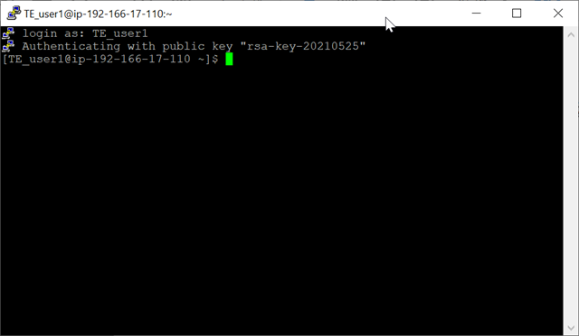

Connecting to a virtual machine via SSH
Connect to the TE-Cloud virtual machine through SSH and control it with the command line.
Before you begin
Finish the configuration in Configuring a remote connection to a virtual machine.
PuTTY is used as the SSH client in this procedure. You can use other SSH clients as you prefer. For details on using other SSH clients, see their documentation.
Procedure
Results
The connection to the virtual machine is established. You can control the virtual machine through the command line.

What to do next
Functional changes
- Introduced in SmarTest 7.6.2